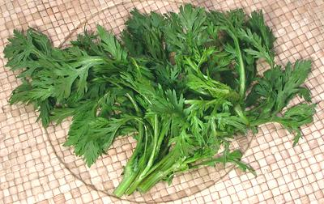

Chrysanthemum Greens

[Tong Ho (China); Ssukgat (Korea); Pak thang-o (Thai); tan o,
cai cúc (Viet); Skal bzang, kelsang (Tibet); Shungiku (Japan);
Gui-chini (India); Garland Chrysanthemum, Crown Daisy;
Chrysanthemum coronarium]
Native to the Mediterranean region, these slightly bitter greens are now
popular in most Asian cuisines, particularly for soups and stews, but also
for stir fries. In Taiwan they are used in oyster omelets, a popular night
market food, and in Korea as one of the many Banchan (small side dishes)
served with a Korean meal. Young shoots are eaten in Crete, and flowers,
fresh or dried, are used in herbal teas. Most common here in Southern
California is the Small Leaf Tong Ho, as in the photo, but a Broad Leaf
Tong Ho is occasionally seen. The greens are high in potassium, other
minerals, carotene and antioxidants.
More on Daisy Herbs & Flowers
Buying:
These can be found fresh, year round, in Korean
and other Asian markets, at least here in Southern Califonria.
Cooking:
These greens can be eaten raw in salads, but
are more usually cooked. For any method, cooking time should be very
short, and for soups and stews, add for just the last few minutes.
dy_chrysz 151017 - www.clovegarden.com
©Andrew Grygus - agryg@clovegaden.com - Photos on this
page not otherwise credited are © cg1 -
Linking to and non-commercial use of this page permitted